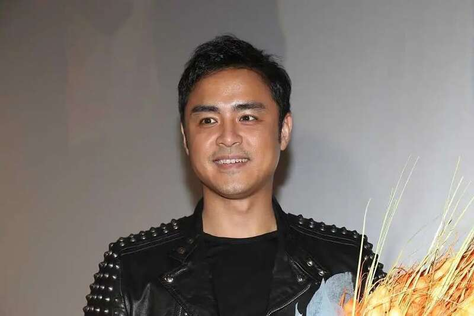
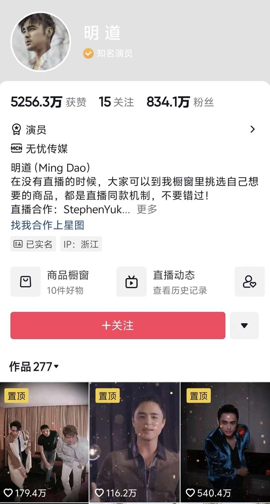
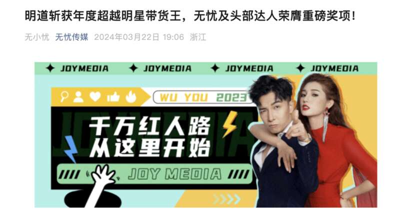

随着网络电商的兴起，请明星直播带货成为诸多品牌的选择。
据红星新闻，本草公司旗下的诗理研洗发水是去年上新的品牌，今年“618”期间，也想通过明星带来一定流量以及销量。
本草公司通过第三方中介公司联系上了杭州无忧传媒有限公司（以下简称无忧公司），并确定于6月14日由该旗下艺人明道为品牌进行专场直播。第三方中介公司代表本草公司与无忧公司签订的合同金额为243.8万，包含专场费以及商业化投放费用。本草公司称，他们实际向第三方中介公司支付了300万元。

明道 图片来源：视觉中国VCG11478153784
最终，整场直播下来，销售额仅34.8万，而且在直播后的1个月内产生大量退货，“退货率达一半以上”。实际销售量仅2000余单，共计20余万元。
“花了几百万找明道做专场直播，
去掉退款只卖出20多万”
据红星新闻，“我们‘618’期间花了几百万找明道做专场直播，结果，去掉退款就只卖出去20多万，费用相差太大，连十分之一都没到，我们希望能按比例退款。”本草公司相关负责人杨女士告诉记者。
杨女士还表示，当初决定让明道来做直播也是考察其历史销售数据不错。由于当初没有签保量合同，“他们只愿意进行售后，不愿意退款”。售后方案包括可以延长使用明道直播时的画面，允许使用艺人的专属链接继续售卖产品，以及继续给至少10次的混场直播带货。但杨女士表示售后方案只是口述，没有任何合同保障，因此双方未达成一致。
对此，明道所在的无忧公司表示，他们给出延长直播切片使用期限、继续为其直播带货等售后方案，但对方的唯一诉求就是退款，还找“网络水军”攻击明道，公司已如约履行合同，若无法妥善解决，他们也准备起诉维权。无忧公司认为，对方试图以明星的名誉作为要挟，是非常不妥的做法。接下来，公司还是会与品牌方进行沟通，也会履行售后承诺。但若继续对艺人形象进行诋毁，他们也会用法律手段维权。
明道生于1980年，因出演《天国的嫁衣》《王子变青蛙》等电视剧被大家熟知，目前在抖音平台拥有800余万粉丝。“蝉妈妈”“飞瓜”等第三方数据平台显示，今年1-8月，明道带货销售额已超1亿。从6月来看，其每天的带货销售额有一定起伏，有几十万，也有几千万，诗理研洗发水的销售量几乎垫底。

据无忧传媒公众号3月22日消息，3月21日，2024蝉妈妈年度大会暨第三届「星蝉奖」颁奖盛典在杭州完美收官，无忧传媒签约明星主播、抖音头部达人明道斩获第三届「星蝉奖」年度超越明星带货王。
盛典现场，明道分享了自己从演员歌手拓展事业新版图，成为带货主播的心路历程。他表示除了演艺工作外，直播将是他不会放弃的事业，未来他将继续为大家种草更多优秀的产品和品牌。

自2023年官宣加入无忧传媒以来，明道携手无忧在电商直播、内容创作等多领域不断突破，追求卓越，屡屡登顶带货总榜TOP1，超市直播专场冲上抖音带货榜双榜第一，单场累计观看人数近2000W，助力母婴、日化、家居、美妆等多赛道品牌实现增长。
律师：是否退款需看具体合同条款
近年来，明星带货“翻车”的案例时有发生，例如某公司请国家一级演员杜旭东带货，缴纳了3.3万元坑位费，最终只卖出一包木耳，销售额64.9元；田亮的夫人、歌手叶一茜直播卖茶具，在线观看人数近90万，只卖出不到2000元；明星杨子、黄圣依夫妇参加年货节卖货，有商家交了10万元坑位费，准备了价值170万元的腊肉，最后仅卖出一单等等。
一位资深律师告诉《每日经济新闻》记者，在这类案例中，若明星带货未能达到品牌方预期，是否要给品牌方退款需看品牌方、中介方（如有）和明星方之间的具体合同条款。 如果合同中有明星方未完成销售目标须按实际完成比率退还的相关条款，则明星方需要退款，反之则不需要 。而如果中介方瞒着明星方对品牌方作出虚假承诺，则中介方或涉嫌欺诈，需承担法律责任。
此前，《每日经济新闻》曾报道过一个案例。苏州某公司花20万元请“大V”直播带货，结果仅成交2笔，销售额不足500元，遂起诉“大V”账号所属的文化公司要求退款。
在该案例中，苏州某商务公司看中某文化传媒公司的账号粉丝量巨大，与其签订了《直播推广服务合同》，约定由文化传媒公司安排主播，为自己公司生产的修护霜进行直播销售推广，基础服务费用为20万元。
文化传媒公司保证，修护霜实际销售金额达50万元，如未实现该销售金额，需退还等比部分的基础服务费用 。
合同签订后，商务公司按约支付了服务费20万元。然而，通过直播该修护霜仅销售了两笔，金额共计仅456元。巨大的心理落差下，商务公司诉至虎丘法院，要求退还服务费用20万元。
虎丘法院审理认为，双方的《直播推广服务合同》合法有效，原告向被告支付服务费用后，被告未按约履行义务，构成违约，原告有权根据约定要求退还服务费用。因双方约定服务费按实际完成比率退还，该院判决被告退还服务费199817.6元。
众多明星已淡出直播带货
据九派新闻，明星直播“带货热”好像开始退潮了。从2020年“明星直播带货元年”，超500名明星艺人涌入这片蓝海；到最早“吃螃蟹”的人最早上岸，李湘、陈赫、刘涛等人都陆续“退休”。
据九派新闻，明星经纪人顾星（化名）曾表示，当红的一线明星肯定不会去带货的，因为带货和拍戏没法兼容。此外，明星“带货热”退潮的另一个原因则是翻车案例太多，还想拍戏的明星必须爱护羽毛，卖假货、卖不出去货都会影响他们的公众形象。
近几年来的直播带货热中，不少明星艺人由于不善带货和品质问题，出现人设翻车、直播翻车。而且不少明星艺人带货销量和他们的咖位严重不符，也让一大批明星艺人选择退出直播间。
从热闹的几百位明星艺人带货的2020年至今，短短几年，明星带货就已明显降温。
去年8月，李湘在微博发文声称“我已退休了”，让不少网友恍惚，曾经明星中的带货一姐，已经好久没有直播带货了。
2019年，李湘以“私人好物首次公开”的主题开启直播带货首秀，成为娱乐圈第一个吃螃蟹的勇士。半年时间，她做了30多场直播，成功吸引到百万粉丝。
据不完全统计，2020年至少有500位艺人开启带货首秀，刘涛、陈赫、李晨、秦海璐等明星纷纷开启了新事业，这一年，也被业内称为是明星艺人直播带货元年。
陈赫做了“有东西直播间”，跟主持人朱桢同台带货；聚划算优选官刘涛拥有了“刘一刀”的新人设，网传其签约价格达到年薪百万。相关报道显示，刘涛的直播首秀，交易总额就破了1.48亿元。
然而主播终究是头部效应极强的行业，明星也不例外，这在2022年表现得尤为明显。绝大多数明星的直播业务能力很快摸到天花板，加之平台抢人大战基本进入尾声，后期不再提供针对性扶持，明星的直播数据开始断崖式下跌。
据统计，从2022年开始，刘涛、秦海璐、陈赫、景甜等曾经火热一时的带货“顶流”明星主播，也相继淡出或彻底停播。 而目前还在带货的明星中，仅有贾乃亮等寥寥数人能稳居头部。